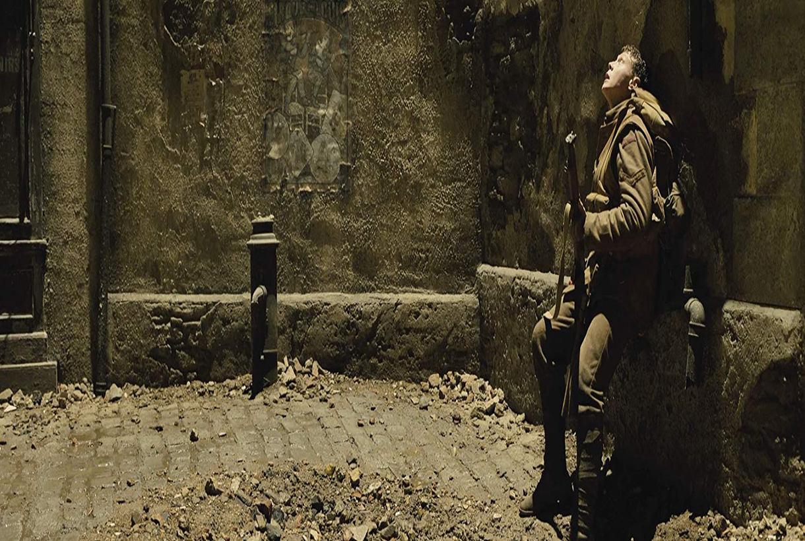
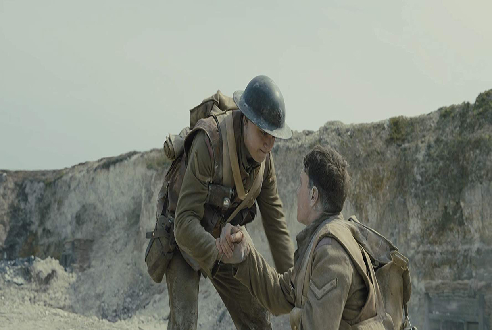
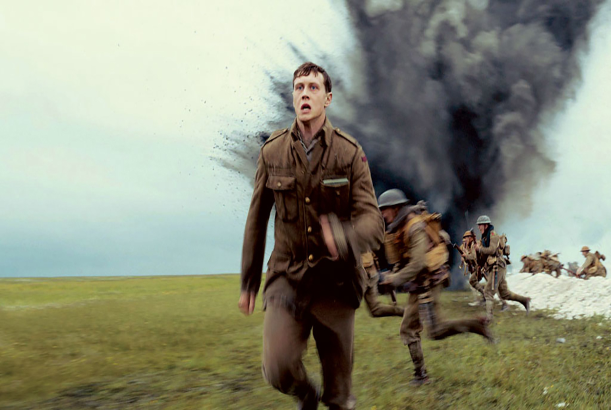
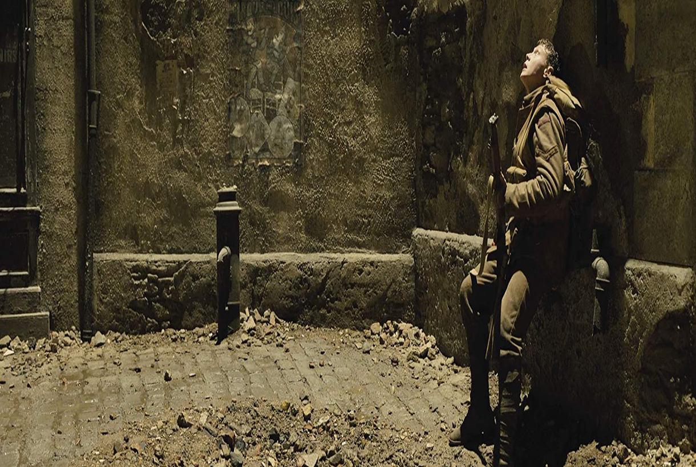
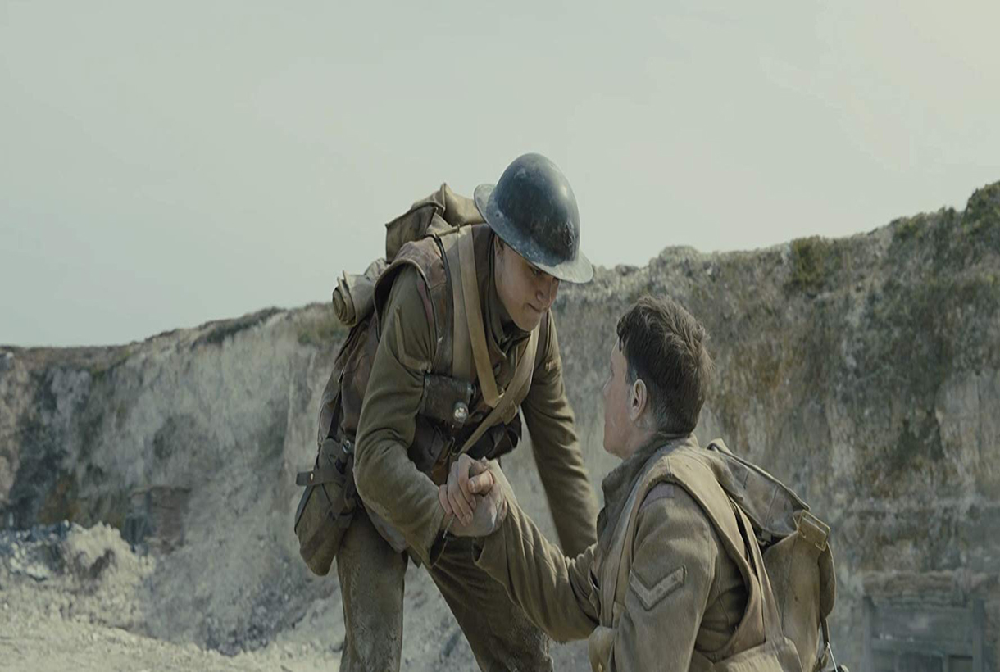
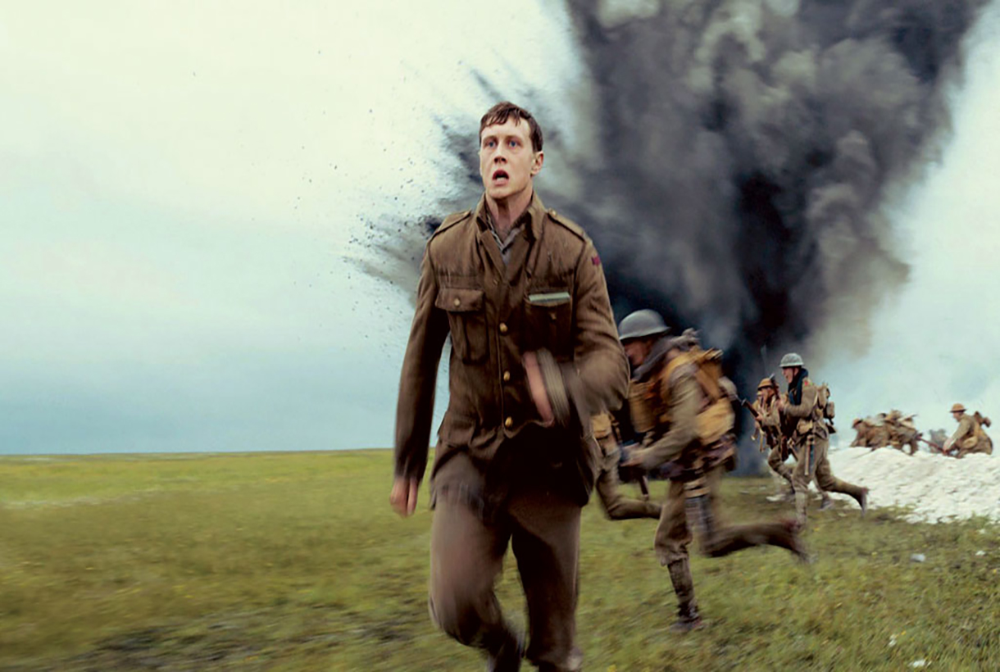

Sinopse / Crítica
1917
Durante a Primeira Guerra Mundial, dois jovens soldados britânicos recebem uma missão praticamente
impossível. Em uma luta contra o tempo, precisam atravessar o território inimigo e entregar uma
mensagem para impedir um ataque que pode matar milhares de soldados. E entre as possíveis vítimas
está o irmão de um dos dois.
Dois jovens soldados descansam tranquilamente. O enquadramento neles é fechado. O que sobrevém ao
chamado do encarregado do batalhão, com a câmera acompanhando frontalmente o deslocamento de ambos
em direção a uma missão tão difícil quanto fundamental, é um forte indício do primor não apenas
técnico, mas também da encenação orquestrada por Sam Mendes. Gradativamente, a guerra vai
preenchendo o quadro, aumentando a dramaticidade desses passos por entre corpos cansados e/ou
feridos e toda sorte de artefatos que denotam a vigília do exército inglês na Primeira Guerra
Mundial. E desde esse começo acachapante o trabalho do diretor de fotografia Roger Deakins o coloca
numa posição de tal forma imprescindível que se poderia aponta-lo como coautor do todo. O
falseamento do plano-sequência único – na realidade o filme é composto de várias tomadas extensas,
justapostas ao ponto de tornar suas costuras praticamente invisíveis – não serve a intentos
meramente estéticos ou exibicionistas. Ela é vital para aderirmos àquelas situações.
Sam Mendes não sinaliza o tempo como único elemento conferindo urgência ao longa-metragem. Claro
que o prazo curto a ser cumprido faz da jornada ainda mais complexa e pedregosa, porém a tensão
maior é concentrada nos efeitos hostis da própria guerra. Não à toa, em vários instantes, o
realizador faz questão de focalizar os pés enlameados dos homens cuja função é atravessar o campo
inimigo para, vencendo as probabilidades contrárias, avisar um grupamento da emboscada que pode
vitima-la integralmente. Eles lutam incessantemente contra o terreno esburacado pelas bombas,
repleto de corpos putrefatos, arames farpados e armadilhas variadas, ou seja, patinam nas
decorrências do embate entre britânicos e alemães. O design de produção a cargo de Dennis Gassner é
de uma excepcionalidade admirável. A acuradíssima direção de arte se encarrega de conferir
verossimilhança a esses obstáculos que se colocam diante dos cabos e de seus aliados.
Dos dois, Blake (Dean-Charles Chapman) é o motivado por atos heroicos, o que intenta obter
medalhas para orgulhar a família. Já seu colega, Schofield (George MacKay), é um sujeito
essencialmente pragmático, descrente quanto à primazia da coragem cega no turbulento campo de
batalha. O companheirismo surge equilibrado entre a intensidade e a sobriedade no bailado hipnótico
que a câmera de Roger Deakins ambienta nas paisagens ora devastadas, ora verdejantes como rápidas
ofertas de contrapontos. A partir de determinado estágio em diante, a missão dos combatentes ganha
novas conotações. Por força de uma tragédia, não é somente necessário garantir a salvaguarda de
quase 2000 incautos que acreditam piamente na inteligência do plano, pois a isso se acresce levar
más notícias a um ente querido. Essa laceração acaba aumentado a natureza pesarosa da jornada
insalubre e inglória. Em 1917 a guerra é intermitentemente vista como um inferno.
Alguns instantes enfraquecem 1917, sobretudo as coincidências ligeiramente forçadas, como o
avião caindo exatamente no quadrante dos incumbidos e a ajuda pontual a uma criança que precisa de
leite para sobreviver à constância da barbárie nas cercanias. Todavia, esses pequenos escorregões
não chegam a arranhar a experiência potente de acompanhar os jovens abraçando veementemente uma
tarefa praticamente impossível, protagonizando um périplo orientado por uma leitura absolutamente
amarga das torpes engrenagens dos conflitos bélicos. Vemos oficiais caindo copiosamente no choro,
sujeitos cegados momentaneamente pela adrenalina da batalha e as ações sustentadas a fim de
valorizar a sobrevivência. Sam Mendes não se detém na relação entre comandantes relativamente
protegidos pela estrutura militar e soldados vulneráveis em campo aberto por conta da hierarquia.
Porém, nos é facultado observar as consequências disso nas entrelinhas.
Noutra vez que incursionou pela guerra, em Soldado Anônimo (2005), Sam Mendes buscou referências
estilísticas em Nascido Para Matar (1987), assim estabelecendo uma ponte entre as guerras do Golfo e
do Vietnã. Com 1917, ele novamente parece reverenciar seu colega e compatriota Stanley Kubrick, mas
desta vez fazendo alusão à Glória Feita de Sangue (1957), então, reportando-se igualmente à Primeira
Guerra Mundial, período pouco abordado pelo cinema. Do clássico dos anos 50 do século passado, seu
novo filme resgata a expressividade dos trajetos dramáticos pelas trincheiras, a sinuosidade desses
corredores exíguos que comportam boa parte da calamidade abatida sobre homens comuns instados a
defender posturas geopolíticas com suas próprias vidas. Em meio a esse verdadeiro tour de force,
Mendes sabe exatamente quando migrar do íntimo ao grandiloquente, com a maestria que lhe é contumaz,
propondo bem mais que um mero espetáculo.
Direção
Sam Mendes
Crítica Especializada

Imagens 1917
 




